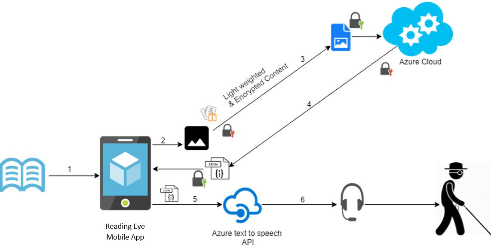

Along with major developments of technology and the
researches carried out in the field of assistive technology in
preceding years, people have developed several products to
make reading easier and more enjoyable for unsighted
people. However, to improve the reading ability and to gain
knowledge for academic purposes for the visually impaired
people, there is a major impediment because people have
limited resources available for many types of documents,
specially books.
There is a research conducted for this same purpose called
Schmoozer.It eliminates some of the issues in existing
applications. It can read images, tables, and equations in a
document except charts.
Table based content identification function in Schmoozer is
to recognize the type of data table (whether it is 2-columns or
3-columns) and convert table data into meaningful digitized
text. When implementing this function, authors had used
HOG algorithm and SVM algorithm to extract features and to
train the database. Text contents had been read using
MATLAB OCR function.
A Simple Equation Region Detector for Printed Document
Images in Tesseract is one of the researches that had
conducted for the equation detection, which recognizes
equations using Tesseract OCR engine. This will basically
classify the text symbols and then identify text regions and
expand the text regions to read and detect the equations.
However, there was no other researches carried out on solely
for equation detection, since this feature compromise of new
methodologies and techniques for chart-based content
detection.
There were no other researches to read chart contents in a
document, but one research had conducted to classify chart
types using Mask RCNN. In this research, authors had
successfully identified chart region and the type of the chart
(e.g. pie, bar, scatter plot, etc.).
The research gap could demonstrate why should we need to implement the proposed
system and this will indicate what are the various drawbacks and needed improvements
of the previously developed systems as a comparison with proved system and the
previously developed systems by referencing the gathered information in the literature
survey. This could show basically, how much the proposed system deviates from
previously conducted researches.
As discussed in the literature review previously it seems that many visually impaired
people also can improve their reading ability and, they can exposure to new areas by
gain knowledge through listening to audio document reading systems.
However, after completion of the background and the literature survey, there were
certain identified limitations that laid the foundation for our research. The proposed
solution is based on to reduce those limitations and perform an improved better
solution for visually impaired people and at the same allow the visually impaired
people to reach the same level of reading level as a normally sighted person without a
barrier by providing the descriptive idea and best understanding of texts, digital
images, charts, tables and mathematical equations.
* Reading is an easier task for a sighted person and most of us take it for granted. Have you ever wondered how it is with a blind person?
* Use of centuries old slow Braille code reading in this modern society.
* Inaccessibility of Braille format of any book.
* Most of modern systems only support text reading.
Main Objective
Implementation of a document reading system called “Reading-Eye” to facilitate
visually impaired people to read printed documents that are not written using the
braille system and help them to improve their reading capability as normally sighted
people.
Specific Objectives
Digital Content Identification, Text-base Content & Smart Assistant
Enhance the security & Reduce the size of images
Reading Images-based contents & Table-based contents.
Reading charts-based contents & Mathematical Equations based contents.
Methodology section describes each functionality in the mobile application in more details. Particularly the process of detecting each graphical content in a document, analyzing & reading the contents, security aspects of the application and the technologies used in implementation.

Digital Content Identification, Text-base Content & Smart Assistant
Enhance the security & Reduce the size of images
Reading Images-based contents & Table-based contents
Reading charts-based contents & Mathematical Equations based contents